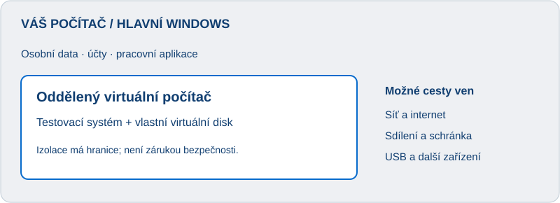

Druhý počítač. Uvnitř toho vašeho.
Od prvního Sandboxu přes plné Windows a Linux až po opatrné offline testování. Podrobné kroky, rozdíly mezi nástroji a kontrola hranic izolace.
Úvod a hranice bezpečnosti
Tento návod vás provede od prvního spuštění virtuálních Windows až k Linuxu, Androidu a opatrnému zacházení s podezřelými soubory. Na každodenním PC začněte důvěryhodnými aplikacemi a oficiálními instalačními obrazy.
Cílem je snížit riziko, ne prohlásit neznámý program za bezpečný. Návod nevyžaduje vyhledávání živých virů ani vypínání ochrany hostitele.

Jak virtuální prostředí funguje
Hostitel je skutečný počítač, hostovaný systém jsou Windows či Linux uvnitř VM. Hypervizor přiděluje výkon a vytváří hranici mezi systémy. Virtuální disk je obvykle soubor VHDX, VDI nebo VMDK.
Instalátor uvnitř VM mění její systém. Pokud však připojíte osobní složku, může číst její skutečný obsah. Oprávnění správce uvnitř hosta nejsou automaticky oprávnění správce hostitele.
Virtualizace využívá vhodný skutečný procesor; emulace napodobuje hardware, třeba starší PC či jinou architekturu. Emulace může být podstatně pomalejší. Virtuální plochy ve Windows pouze organizují okna a tuto izolaci nevytvářejí.
Vyberte správný režim
| Účel | Prostředí | Síť a sdílení |
|---|---|---|
| Krátký test důvěryhodné aplikace | Windows Sandbox | Podle potřeby |
| Linux, další Windows, dlouhodobá práce | Hyper-V / VirtualBox / VMware | Internet pro přípravu; omezené sdílení |
| Mírně podezřelý soubor | Čistá offline VM nebo omezený Sandbox | Žádná síť, osobní účty ani zapisovatelné sdílení |
| Známý malware, silné podezření | Samostatné laboratorní PC | Fyzicky oddělená síť; odborný postup |
Pro Android použijte emulátor určený pro tuto platformu. WSL, Docker a herní emulátor nepovažujte automaticky za laboratoř pro malware.
Příprava vašeho počítače
Výchozí sestava podle vašich údajů: Ryzen 7 5700X, 32 GB RAM, GTX 1070, Windows 11 Pro. Souhrnné volné místo je přibližně 2,33 TB; důležité je volné místo na konkrétním disku. Build a verzi Windows bereme jako vámi dodané údaje.
-
Zálohujte důležitá data na úložiště, které nebude během rizikového testu připojené. Ověřte, že umíte soubor ze zálohy obnovit.
-
Aktualizujte Windows, ochranu systému a zvolený hypervizor. Ve Správci úloh → Výkon → Procesor ověřte „Virtualizace: Povoleno“.
-
Je-li vypnutá, podle manuálu základní desky zapněte SVM / AMD-V v UEFI. Neměňte zároveň nesouvisející volby ani nevypínejte Secure Boot kvůli běžnému testu.
-
Na SSD vytvořte složku například D:\VM-Lab; písmeno přizpůsobte svému disku. Připravte podsložky ISO, VM a Poznamky. Nedávejte virtuální disky do synchronizované složky OneDrive.
-
Začněte jednou VM: Linux 4 GB RAM a 2 vCPU; Windows 8 GB a 2–4 vCPU. Pro hlavní Windows ponechte dostatek paměti. Jsou to startovní návrhy, ne univerzální minima.
Dynamický disk nerovná se předem obsazená celá kapacita; snímky přesto mohou rychle spotřebovat skutečné místo.
Windows Sandbox: první spuštění
-
V hlavních Windows vyhledejte „Zapnout nebo vypnout funkce systému Windows“.
-
Zaškrtněte Windows Sandbox, potvrďte OK a podle výzvy restartujte. Vyžaduje oprávnění správce.
-
V nabídce Start spusťte Windows Sandbox. Nechte načíst samostatnou plochu.
-
Nejprve pouze prohlédněte prostředí. Zavřete okno a potvrďte odstranění obsahu. Znovu jej otevřete a ověřte čistý start.
Sandbox podporují například Pro, Enterprise a Education. Potřebuje zapnutou hardwarovou virtualizaci, nejméně 4 GB RAM (doporučeno 8 GB), dvě jádra a 1 GB volného místa.
Podklad: Microsoft: instalace.
Sandbox s omezeným propojením
Následující konfiguraci vytváříte v hlavních Windows. Přenosová složka obsahuje pouze vstupní soubor, žádné osobní dokumenty.
-
Vytvořte C:\SandboxInput a vložte do ní pouze soubor pro test. Nespouštějte jej na hostiteli. Pokud jej ochrana blokuje, neobcházejte blokování.
-
V Poznámkovém bloku vložte konfiguraci níže. Uložte jako TestOffline.wsb; typ „Všechny soubory“, nikoli .wsb.txt.
-
Dvojklikem na .wsb spusťte Sandbox. Uvnitř otevřete C:\Input a pro běžný instalační test zkopírujte vstupní soubor na jeho vlastní plochu.
-
Po skončení zavřete Sandbox a potvrďte odstranění. Obsah vstupní složky na hostiteli zůstává.
<Configuration>
<Networking>Disable</Networking>
<ClipboardRedirection>Disable</ClipboardRedirection>
<vGPU>Disable</vGPU>
<AudioInput>Disable</AudioInput>
<VideoInput>Disable</VideoInput>
<PrinterRedirection>Disable</PrinterRedirection>
<ProtectedClient>Enable</ProtectedClient>
<MappedFolders>
<MappedFolder>
<HostFolder>C:\SandboxInput</HostFolder>
<SandboxFolder>C:\Input</SandboxFolder>
<ReadOnly>true</ReadOnly>
</MappedFolder>
</MappedFolders>
</Configuration>ReadOnly chrání proti běžnému zápisu, nikoli čtení. MappedFolders stále vytváří propojení. Pro přísnější VM použijte vstupní ISO bez sdílené složky. Protected Client nenahrazuje odpojení sítě. Offline webový instalátor nemusí fungovat.
Plná VM: výběr a instalace nástroje
Vyberte nejprve jeden nástroj. Pro vaši edici Pro je praktický Hyper-V; VirtualBox a VMware nabízejí alternativní rozhraní a vlastnosti. Bezpečnost nelze určit jen podle značky.
Hyper-V
-
V hlavních Windows otevřete systémové funkce, zaškrtněte Hyper-V včetně nástrojů správy a platformy. Restartujte podle výzvy.
-
Spusťte Správce technologie Hyper-V a vyberte místní počítač.
-
Nový → Virtuální počítač. Zadejte název, umístění, generaci 2 pro moderní Windows/Linux, paměť a nový VHDX.
-
Pro začátek nastavte síť „Nepřipojeno“, vložte oficiální ISO a dokončete průvodce. V Nastavení VM upravte procesory.
-
Pro Windows 11 ponechte Secure Boot a zapněte virtuální TPM; pro Linux může být potřeba šablona Secure Boot „Microsoft UEFI Certificate Authority“.
VirtualBox
-
Stáhněte Windows hosts z oficiálních stránek Oracle. Instalátor mění hostitele a může dočasně přerušit síť.
-
New / Nový → název a ISO. Pro přehledný ruční postup přeskočte unattended installation, je-li nabízena.
-
Nastavte RAM, procesory a nový VDI. Před spuštěním zkontrolujte Network, Shared Folders, General → Advanced a USB.
-
Pro izolovaný test zakažte všechny síťové adaptéry, schránku a drag-and-drop. Extension Pack není pro základní offline VM nutný; má vlastní licenci.
VMware Workstation Pro
-
Použijte oficiální stránku VMware/Broadcom. Stažení může vyžadovat účet. Aktuálně je Workstation Pro dostupný zdarma pro osobní i komerční použití, podmínky ověřte při stažení.
-
Create a New Virtual Machine → Typical. Zvolte ruční instalaci systému později, pokud nechcete automatické Easy Install.
-
Vyberte systém, nový virtuální disk, RAM a CPU. V nastavení CD/DVD vložte ISO.
-
Před startem odpojte síť; vypněte Shared Folders a Guest Isolation → copy/paste, drag/drop. Odstraňte zbytečná zařízení.
Souběh s Hyper-V/VBS může změnit výkon či možnosti jiných nástrojů. Kvůli pohodlí neoslabujte hlavní Windows; hledejte podporovanou konfiguraci.
Hyper-V: průvodce VM · Oracle: instalace · VMware: oficiální stránka
Instalace Linuxu krok za krokem
Pro první pokus vyberte Ubuntu LTS nebo Linux Mint; jiné distribuce mohou mít jiný instalátor. Stahujte x86-64/amd64 obraz pro tento počítač. „amd64“ funguje i na procesorech Intel.
-
Stáhněte ISO z oficiálního webu distribuce. Porovnejte SHA-256 s publikovaným kontrolním součtem; podpis součtů poskytuje silnější ověření původu.
-
Vytvořte novou VM: startovně 4 GB RAM, 2 vCPU, 40–60 GB dynamický disk. Připojte ISO.
-
Spusťte VM a zvolte vyzkoušení nebo instalaci. Ve virtuálním okně ověřte, že instalátor vidí pouze připravený virtuální disk.
-
Volba „Erase disk“ je přijatelná pouze pro nový virtuální disk. Nikdy nepřipojujte fyzický disk hostitele. Pokud si nejste jistí, zastavte instalaci.
-
Zvolte jazyk, klávesnici a místní testovací účet. Dokončete instalaci, restartujte VM a odpojte ISO, pokud startuje instalátor znovu.
-
Pro přípravu důvěryhodné VM povolte NAT / vhodné připojení. Nainstalujte aktualizace; pro Ubuntu/Mint lze uvnitř použít příkazy níže.
-
Vypněte VM a vytvořte čistý snímek. Pro offline test znovu odpojte síť.
sudo apt update
sudo apt upgradePříkazy platí pro Ubuntu/Mint/Debian, ne pro všechny distribuce. Fedora používá dnf, Arch pacman. Integrační doplňky zlepší rozlišení, ale automaticky nepovolujte sdílení.
Další Windows a starší systémy
-
Stáhněte Windows ISO od Microsoftu nebo použijte své legitimní médium. Licence hlavních Windows automaticky nezaručuje právo na další instalaci.
-
Pro Windows 11 vytvořte moderní VM s UEFI, Secure Boot a vTPM. Startovně 8 GB RAM a 80–100 GB disk; minimální požadavky ověřte u Microsoftu.
-
Instalujte uvnitř okna VM na nový virtuální disk. Pokud nastavení vyžaduje účet, použijte oddělený testovací účet bez osobních dat; neobcházejte zde bezpečnostní požadavky.
-
Aktualizujte důvěryhodný systém, ponechte ochranu a vytvořte čistý snímek.
-
Starší Windows provozujte offline. Pro DOS a velmi staré Windows může být vhodnější generace 1, VirtualBox, VMware nebo emulátor 86Box. Kompatibilitu ověřte pro konkrétní systém.
Nepodporovaný systém se nestane bezpečným tím, že běží virtuálně. Nepřihlašujte se v něm k e-mailu či bankovnictví. macOS má omezení licence i hardwaru; tento Windows PC není univerzální podporovaný hostitel pro macOS.
Android a emulátory
Pro transparentní vývojové testy začněte oficiálním Android Emulator v Android Studiu. Běžný Android emulátor může být silně propojený s hostitelem; není automaticky vhodný pro podezřelé APK.
-
Z oficiálního webu nainstalujte Android Studio a v průvodci požadované SDK a Emulator.
-
V Device Manager / Virtual Device Manager zvolte Create Device a profil zařízení.
-
Stáhněte doporučený systémový obraz pro podporovanou architekturu, nastavte přiměřenou paměť a spusťte AVD.
-
Nejprve otestujte běžnou aplikaci. Používejte samostatný testovací účet, případně žádný účet.
-
Při návratu k čistému stavu použijte Wipe Data. Cold Boot pouze vypne rychlý start; nesmaže všechna uživatelská data.
Na Windows lze pro akceleraci využít Windows Hypervisor Platform podle dokumentace. Neinstalujte několik různých akceleračních ovladačů naslepo. Bluetooth, kamera a grafika nemusí odpovídat telefonu.
Síť: offline, internet, laboratoř
| Režim | Co znamená | Vhodnost |
|---|---|---|
| Adaptér vypnutý / odpojený | Žádná běžná komunikace přes tento adaptér | Výchozí pro podezřelý soubor |
| NAT / Hyper-V Default Switch | Pohodlné odchozí spojení; neznamená blokování LAN | Důvěryhodné instalace a aktualizace |
| Bridged / External | VM je zařízení v běžné síti | Ne pro podezřelý obsah |
| Host-only / Hyper-V Internal | VM může komunikovat s hostitelem | Není oddělení od hostitele |
| VirtualBox Internal / Hyper-V Private / VMware LAN Segment | Skupina VM bez běžného síťového rozhraní hostitele | Laboratorní síť, pokud nic nepřidá směrování |
-
Vypněte VM. U každého adaptéru prověřte režim; skryté druhé rozhraní může izolaci zrušit.
-
Pro offline test vypněte/odstraňte adaptéry v nastavení hypervizoru, ne pouze ikonou uvnitř hosta.
-
Pro internet na důvěryhodné VM zapněte běžné NAT připojení. Není to režim pro malware.
-
Pro více laboratorních VM vytvořte Private/Internal síť podle nástroje. Nepřipojujte další adaptér k internetu ani nepovolujte Internet Connection Sharing.
VM-router se dvěma adaptéry může z izolované sítě udělat propojenou. VPN v hostiteli ani neúspěšný ping nejsou důkaz izolace.
Sdílení souborů a zařízení
Nejčastější otevřené cesty jsou shared folders, sdílená schránka, drag-and-drop, přesměrované disky, USB, mikrofon a kamera.
-
Na vypnuté VM vyprázdněte seznam sdílených složek. Vypněte obousměrnou schránku a přetahování.
-
V Hyper-V pro rizikový test nepoužívejte Enhanced Session s přesměrováním disků a zařízení. Zkontrolujte také nastavení RDP, pokud jej používáte.
-
Vypněte automatické připojování USB a nepřipojujte zálohovací disky. Nepovolujte přístup k fyzickým diskům.
-
Pro neškodné instalace použijte úzkou složku jen pro čtení. Pro přísnější test připravte read-only vstupní ISO a po přenosu jej odpojte.
-
Nic nevynášejte automaticky ven. Reporty a dokumenty mohou obsahovat aktivní obsah; export je nové rozhodnutí o riziku.
Read-only nechrání důvěrnost. Také soubor připravený na hostiteli může zpracovat jeho antivir, náhled či indexer; zacházení s podezřelými vstupy má riziko ještě před spuštěním VM.
Snímky, klony a zálohy
-
Po instalaci a aktualizaci vypněte čistou VM. V Hyper-V vytvořte Checkpoint; ve VirtualBox Snapshot; ve VMware Snapshot.
-
Pojmenujte jej datum + „cisty-zaklad“ a zapište systém, verzi hypervizoru a stav sítě.
-
Ve VM vytvořte neškodný soubor a změňte pozadí. Obnovte snímek a ověřte, že pokus zmizel.
-
Zachovejte samostatnou kopii/Export vypnuté čisté VM mimo pracovní řetězec snímků.
-
Po testu VM vypněte, vraťte čistý snímek a před dalším spuštěním zkontrolujte i nastavení hypervizoru.
Hyper-V Standard Checkpoint zahrnuje stav paměti; Production Checkpoint používá mechanismy konzistence hosta. Snímek není nezávislá záloha. Smazání snímku obvykle slučuje disky, nikoli vrací VM. Klon může mít závislost na původním disku, pokud je linked clone.
Postup pro podezřelý soubor
-
Nejprve posuďte původ a potřebu. Nejbezpečnější rozhodnutí může být soubor nespouštět a získat důvěryhodnou alternativu.
-
Proveďte kontrolu aktuální ochranou; zkontrolujte digitální podpis a původ. Ani podpis, ani nulový počet detekcí nejsou záruka.
-
Pokud ochrana označí obsah jako škodlivý, na každodenním PC test nepokračujte a neobcházejte karanténu.
-
Pro mírné podezření připravte čistou offline VM bez účtů a propojení. Zapište hash, čas a nastavení.
-
Použijte jen smyšlená data. Sledujte chování ve VM; neinstalujte zkoušený soubor do hostitele.
-
Po skončení VM vypněte a obnovte základ. Pokud něco nasvědčuje zásahu hostitele, neomezujte reakci na obnovu VM.
Nepředávejte citlivé soubory veřejným online skenerům bez zvážení důvěrnosti: upload může znamenat sdílení s dalšími stranami. Offline chování může být neúplné; malware může čekat, rozpoznat VM nebo vyžadovat internet.
Kontrola izolace a první neškodný test
-
Na vypnuté VM prověřte všechny adaptéry, sdílení, USB a přesměrování. Pořiďte si záznam nastavení.
-
Spusťte VM. Zkontrolujte dostupné disky a síťové adaptéry. Ve Windows použijte ipconfig /all; v Linuxu ip addr.
-
Zkuste otevřít běžnou veřejnou stránku; v offline režimu nesmí fungovat. Neúspěch stránky samotný ale nedokazuje izolaci.
-
Zkopírujte na hostiteli neškodný text a zkuste jej vložit do hosta. Sdílená schránka má být vypnutá.
-
Nacvičte obnovení snímku s textovým souborem, nikoli s živým virem.
-
Volitelně ověřte reakci antiviru souborem EICAR z oficiálního webu, uvnitř vyhrazeného testovacího prostředí. Ochranu nevypínejte; blokování je očekávaný výsledek.
EICAR testuje reakci ochrany, nikoli únik z VM. Žádný jednoduchý kontrolní seznam neprokáže nepřítomnost zranitelnosti hypervizoru.
Kdy použít samostatné laboratorní PC
Známý malware, silné podezření, potřeba vypnout ochranu pro analýzu nebo experiment s únikem z VM překračují běžné domácí testování na pracovním PC.
-
Vyhraďte samostatný počítač bez osobních souborů, účtů, cloudové synchronizace a firemního připojení.
-
Před testem fyzicky odpojte síťový kabel a vypněte Wi-Fi/Bluetooth. Oddělená VM síť má zůstat i uvnitř laboratoře.
-
Připravte čistý obnovovací obraz a média pro reinstalaci. Potřebné aktualizace stáhněte před testem.
-
Přenosová média považujte za součást laboratoře. Nepoužívejte je zároveň pro zálohy a běžný počítač.
-
Při požadavku na internet pro skutečný malware využijte odborně navrženou laboratoř. Prosté NAT připojení není náhradou řízené izolace.
I fyzická laboratoř má zbytková rizika. Tento domácí průvodce neposkytuje certifikaci bezpečnosti ani návod na obcházení antivirové ochrany.
Údržba a řešení problémů
VM nestartuje
Prověřte SVM/AMD-V, restart po aktivaci funkcí a podporu hosta. Hlášení o obsazené virtualizaci řešte podle dokumentace nástroje; neodstraňujte bezpečnostní vrstvy naslepo.
Černá obrazovka nebo instalátor stále znovu
Zkontrolujte ISO, pořadí bootování a generaci BIOS/UEFI. Po instalaci odpojte ISO. Změna generace již vytvořené VM může vyžadovat novou VM.
Secure Boot odmítá Linux
Prověřte oficiální obraz a podporu distribuce; v Hyper-V ověřte Linuxovou šablonu certifikátu. Změnu dělejte pouze v testovací VM.
Málo výkonu nebo místa
Sledujte RAM hostitele a volné místo. Nedávejte hostu všech 16 vláken. Snímky spravujte přes hypervizor; soubory rozdílových disků nemažte ručně.
Internet nefunguje
V offline režimu je to správně. U důvěryhodné VM prověřte připojení adaptéru, NAT a DNS. Zapnutí bridge není univerzální oprava.
Pravidelná údržba
Aktualizujte hypervizor i čistý základ. Rizikově změněnou VM nepřipojujte na internet jen kvůli aktualizaci; obnovte důvěryhodný základ a aktualizujte ten.
Kontrolní seznamy a slovníček
Před podezřelým testem
- Vím, proč potřebuji soubor spustit; ochrana hostitele zůstává zapnutá.
- Mám ověřenou zálohu a čistý základ VM.
- Všechny síťové adaptéry jsou vypnuté, sdílení a přesměrování odpojené.
- Nemám uvnitř osobní data, skutečné účty ani připojené zálohy.
- Umím VM vypnout a obnovit; vím, kdy test zastavit.
Po testu
- VM vypnu a obnovím čistý stav.
- Výstup nepovažuji za bezpečný jen proto, že vznikl ve VM.
- Zapíšu pozorování a před dalším startem znovu prověřím nastavení.
Podezření na napadení hostitele
Odpojte jeho síť, zastavte test, nepřipojujte zálohy a nepracujte s citlivými účty. Hesla měňte z jiného důvěryhodného zařízení. Proveďte kontrolu ochrany, podle závažnosti odborné posouzení a čistou reinstalaci. Samotné smazání VM nestačí.
ISO: obraz instalačního média. Snapshot: zachycený stav. NAT: překlad adres, nikoli bezpečnostní certifikát. Bridge: připojení do běžné sítě. vCPU: procesor přidělený VM. Passthrough: přímé zpřístupnění zařízení. Guest Additions/Tools: integrační doplňky.
Videa a další návody
Výběr odkazů zkontrolován 5. 10. 2026. Videa jsou doplněk: vyhledáním jsme ověřili téma a dostupné popisy, nikoli bezpečnost každého kroku ve videu. Rozhraní starších verzí se může lišit. Izolaci nastavujte podle tohoto manuálu a aktuální dokumentace.
CZ · Fedora ve VirtualBoxu · 2025
PetitShingo: Instalace Linuxu na Windows přes VirtualBox — začátečník, stažení a instalace Fedory; není to malware laboratoř.
SK · Ubuntu a VirtualBox · 2022
Informatika s Mišom: Kurz Linuxu, část 1 — blízký jazykový doplněk; starší rozhraní.
EN · Hyper-V a VM · 2022
TUTORIAL: Install Hyper-V and a Virtual Machine on Windows 11 — instalace a první VM; starší rozhraní.
EN · Zapnutí Hyper-V · 2025
Install Hyper V on Windows 11 — zaměřeno na aktivaci funkce.
Další vyhledávání videí
Následující odkazy jsou výsledky hledání, ne jednotlivá ověřená videa: CZ: Sandbox a izolace · EN: VirtualBox snapshots networking · DE: VirtualBox Linux installieren · DE: Hyper-V Anleitung.
Psané návody
- EN: Oracle VirtualBox User Guide — síť, instalace, snímky.
- EN: Ubuntu installation tutorial — instalátor Ubuntu.
- EN/CZ: Microsoft Learn Hyper-V — jazyk a dostupnost překladu mohou kolísat.
- DE: Oracle: VirtualBox pod Oracle Linux — hostitelem je Linux, nikoli Windows; pro pokročilejší.
- EN: Android Developers: AVD — virtuální Android zařízení.
Katalog systémů, emulátorů a nástrojů
Katalog je rozcestník, nikoli potvrzení bezpečnosti každého produktu. Podporované hostitele, licence a požadavky ověřte před instalací na uvedeném oficiálním webu. Grafický desktop obvykle potřebuje více paměti než server bez GUI.
| Oblast | Projekt / oficiální web | Účel a omezení |
|---|---|---|
| Nástroje | Windows Sandbox | Windows Pro a vyšší; dočasné Windows, snadný start |
| Nástroje | Hyper-V | Windows Pro a vyšší; plné VM, střední obtížnost |
| Nástroje | VirtualBox | Windows/Linux/macOS podle podporované verze; doplňky mají vlastní licence |
| Nástroje | VMware Workstation Pro | Windows/Linux; plné VM; Fusion je pro Mac |
| Nástroje | QEMU | Více hostitelů a architektur; emulace i virtualizace, pokročilé |
| Nástroje | Proxmox VE | Samostatný serverový hostitel; není běžná aplikace do Windows |
| Linux | Ubuntu | Desktop, vhodný první pokus; přibližně 4 GB RAM pro pohodlný start |
| Linux | Linux Mint | Desktop blízký běžnému uživateli; oficiální ISO |
| Linux | Debian | Desktop/server; více voleb instalátoru |
| Linux | Fedora | Aktuální desktop/server ekosystém |
| Linux | openSUSE | Varianty pro různé aktualizační režimy |
| Linux | Arch Linux | Pokročilé sestavení; není nejjednodušší první instalace |
| Linux | Q4OS | Alternativní desktop; vybírejte podporovaný obraz |
| Systémy | Windows 11 | Oficiální ISO; licence, UEFI a TPM požadavky |
| Systémy | FreeBSD | BSD, server i experimentální desktop; jiný systém než Linux |
| Systémy | FreeDOS | DOSové aplikace; kompatibilita není úplná |
| Systémy | ReactOS | Experimentální systém; ne pro běžné citlivé použití |
| Systémy | Haiku | Alternativní systém pro poznávání |
| Android | Android Studio Emulator | Windows/Linux/macOS podle aktuálních požadavků; začněte zde |
| Android | Android-x86 | Experimentální port; ověřte stáří obrazu a podporu |
| Historie | 86Box | Emulace historického PC; BIOS/ROM a média mají vlastní práva |
| Historie | DOSBox | DOSové programy/hry; mount zpřístupňuje hostitelské složky |
| Sítě | GNS3 | Síťové topologie; obrazy zařízení mohou vyžadovat licenci |
| Sítě | EVE-NG | Síťová laboratoř; pokročilé, vlastní nároky a licence obrazů |
| Pomocné | Sysinternals | Process Explorer, Process Monitor, Autoruns; pozorování uvnitř VM |
| Pomocné | EICAR | Neškodný test antiviru; nedokazuje izolaci |
| Jiný režim | WSL | Linux pro práci s Windows; integrace s hostitelem |
| Jiný režim | Docker | Kontejnery aplikací; nejsou automaticky laboratoř pro malware |
Další témata k virtuálním pokusům: webový server, databáze, vývojové prostředí, test aktualizací, obnova záloh, domácí server, BSD firewall a síť několika VM. U NAS systémů nepřipojujte skutečné datové disky pro první pokus. U macOS respektujte hardware a licenci Apple.
Záměrně nepoužíváme neoficiální balíky starých Windows, pirátské ROM ani katalogy živého malwaru. Široký seznam není důvod instalovat vše; první zvládnutá VM přinese více než deset neověřených prostředí.